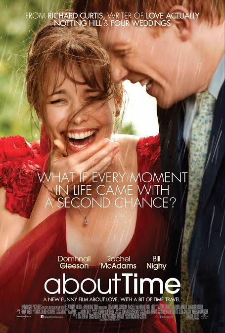
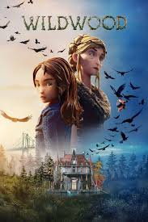

PELÍCULAS
De la Peor a la Mejor cinta de Peter Pan
Una selección personal del niño que nunca crecio.
VER VIDEO →
¿Cuáles son las mejores películas? ¿Qué personajes merecen el primer lugar? ¿Qué temporadas nos gustaron más? Aquí compartimos nuestras listas, opiniones y clasificaciones sobre el cine y las series.
EXPLORAR TOPSTodos tenemos una película favorita, un personaje que nos encanta o una temporada que consideramos la mejor. En esta sección organizamos nuestras preferencias en listas y rankings, explicando las razones detrás de cada elección.

Hay historias que nos sorprenden, personajes que se convierten en nuestros favoritos y momentos que merecen ser recordados. Descubre uno de nuestros rankings especiales y comparte tu opinión.
VER EN YOUTUBEExplora nuestras listas según el tipo de contenido.
Nuestras clasificaciones, listas y opiniones.
Una selección personal del niño que nunca crecio.
VER VIDEO →
Canciones que se quedaron en Cada uno de nosotros.
VER VIDEO → TOP 2
TOP 2
 TOP 3
TOP 3
Greg y su diario tuvieron sus bueno tropiecos.
VER VIDEO → TOP 8
TOP 8
Una nueva lista que pronto compartiremos en el canal.
Tres películas que ocupan un lugar especial entre mis favoritas.

Una Hisotria Inolvidable.

Una historia muy especial.

Favorita del Momento.
Cada ranking representa una opinión, una experiencia y una forma de conectar con las historias. No todos estaremos de acuerdo con las mismas posiciones, y precisamente eso hace interesantes estas conversaciones.
DESCUBRIR MÁS
Mira nuestros rankings directamente desde YouTube.